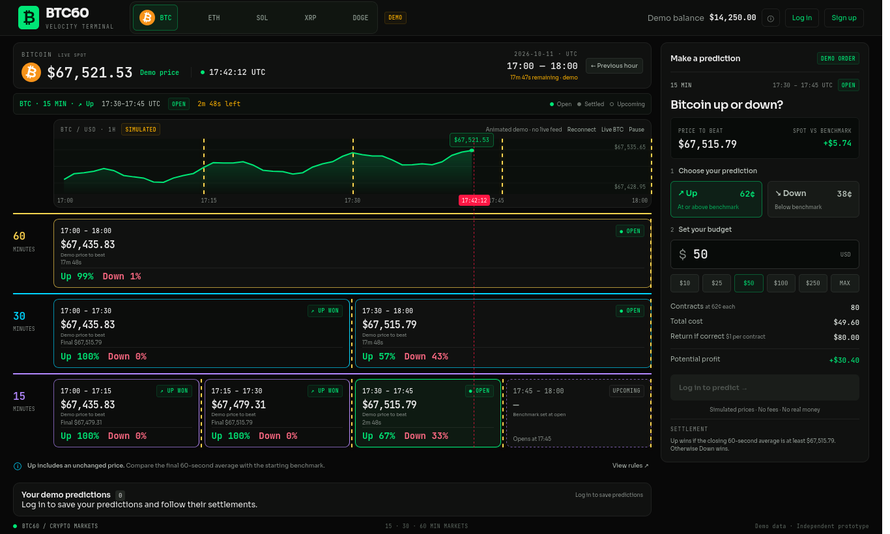

Next move.
Your prediction.
Up or down? Follow Bitcoin’s momentum and make your call across 15, 30, and 60 minute markets. One hour of opportunity, all on one screen.
$14,250 DEMO BALANCE · NO REAL MONEY

One hour. Every interval. Your call.Explore the playfield ↗
Actual terminal · Illustrative demo prices